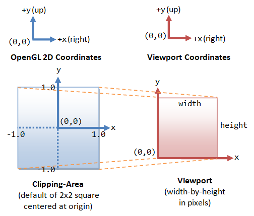

Setting Up OpenGL
To set up OpenGL, depending on your programming platform, read:
- How to write OpenGL programs in C/C++.
- How to write OpenGL programs in Java: JOGL or LWJGL.
- How to write OpenGL|ES programs in Android.
Example 1: Setting Up OpenGL and GLUT (GL01Hello.cpp)
Make sure that you can run the "GL01Hello.cpp" described in "How to write OpenGL programs in C/C++", reproduced below:
1 2 3 4 5 6 7 8 9 10 11 12 13 14 15 16 17 18 19 20 21 22 23 24 25 26 27 28 29 30 31 32 33 34 35 36 |
/* * GL01Hello.cpp: Test OpenGL/GLUT C/C++ Setup * Tested under Eclipse CDT with MinGW/Cygwin and CodeBlocks with MinGW * To compile with -lfreeglut -lglu32 -lopengl32 */ #include <windows.h> // for MS Windows #include <GL/glut.h> // GLUT, include glu.h and gl.h /* Handler for window-repaint event. Call back when the window first appears and whenever the window needs to be re-painted. */ void display() { glClearColor(0.0f, 0.0f, 0.0f, 1.0f); // Set background color to black and opaque glClear(GL_COLOR_BUFFER_BIT); // Clear the color buffer (background) // Draw a Red 1x1 Square centered at origin glBegin(GL_QUADS); // Each set of 4 vertices form a quad glColor3f(1.0f, 0.0f, 0.0f); // Red glVertex2f(-0.5f, -0.5f); // x, y glVertex2f( 0.5f, -0.5f); glVertex2f( 0.5f, 0.5f); glVertex2f(-0.5f, 0.5f); glEnd(); glFlush(); // Render now } /* Main function: GLUT runs as a console application starting at main() */ int main(int argc, char** argv) { glutInit(&argc, argv); // Initialize GLUT glutCreateWindow("OpenGL Setup Test"); // Create a window with the given title glutInitWindowSize(320, 320); // Set the window's initial width & height glutInitWindowPosition(50, 50); // Position the window's initial top-left corner glutDisplayFunc(display); // Register display callback handler for window re-paint glutMainLoop(); // Enter the event-processing loop return 0; } |
#include <windows.h>
The header "windows.h" is needed for the Windows platform only.
#include <GL/glut.h>
We also included the GLUT header, which is guaranteed to include "glu.h" (for GL Utility) and "gl.h" (for Core OpenGL).
The rest of the program will be explained in due course.
Introduction
OpenGL (Open Graphics Library) is a cross-platform, hardware-accelerated, language-independent, industrial standard API for producing 3D (including 2D) graphics. Modern computers have dedicated GPU (Graphics Processing Unit) with its own memory to speed up graphics rendering. OpenGL is the software interface to graphics hardware. In other words, OpenGL graphic rendering commands issued by your applications could be directed to the graphic hardware and accelerated.
We use 3 sets of libraries in our OpenGL programs:
- Core OpenGL (GL): consists of hundreds of commands, which begin with a prefix "
gl" (e.g.,glColor,glVertex,glTranslate,glRotate). The Core OpenGL models an object via a set of geometric primitives such as point, line and polygon. - OpenGL Utility Library (GLU): built on-top of the core OpenGL to provide important utilities (such as setting camera view and projection) and more building models (such as qradric surfaces and polygon tessellation). GLU commands start with a prefix "
glu" (e.g.,gluLookAt,gluPerspective). - OpenGL Utilities Toolkit (GLUT): OpenGL is designed to be independent of the windowing system or operating system. GLUT is needed to interact with the Operating System (such as creating a window, handling key and mouse inputs); it also provides more building models (such as sphere and torus). GLUT commands start with a prefix of "
glut" (e.g.,glutCreatewindow,glutMouseFunc). GLUT is platform independent, which is built on top of platform-specific OpenGL extension such as GLX for X Window System, WGL for Microsoft Window, and AGL, CGL or Cocoa for Mac OS.
Quoting from the opengl.org: "GLUT is designed for constructing small to medium sized OpenGL programs. While GLUT is well-suited to learning OpenGL and developing simple OpenGL applications, GLUT is not a full-featured toolkit so large applications requiring sophisticated user interfaces are better off using native window system toolkits. GLUT is simple, easy, and small."
Alternative of GLUT includes SDL, .... - OpenGL Extension Wrangler Library (GLEW): "GLEW is a cross-platform open-source C/C++ extension loading library. GLEW provides efficient run-time mechanisms for determining which OpenGL extensions are supported on the target platform." Source and pre-build binary available at http://glew.sourceforge.net/. A standalone utility called "
glewinfo.exe" (under the "bin" directory) can be used to produce the list of OpenGL functions supported by your graphics system. - Others.
Vertex, Primitive and Color
Example 2: Vertex, Primitive and Color (GL02Primitive.cpp)
Try building and runnng this OpenGL C/C++ program:
1 2 3 4 5 6 7 8 9 10 11 12 13 14 15 16 17 18 19 20 21 22 23 24 25 26 27 28 29 30 31 32 33 34 35 36 37 38 39 40 41 42 43 44 45 46 47 48 49 50 51 52 53 54 55 56 57 58 59 60 61 62 63 64 65 66 67 68 69 70 71 72 73 74 75 76 77 78 79 80 |
/* * GL02Primitive.cpp: Vertex, Primitive and Color * Draw Simple 2D colored Shapes: quad, triangle and polygon. */ #include <windows.h> // for MS Windows #include <GL/glut.h> // GLUT, include glu.h and gl.h /* Initialize OpenGL Graphics */ void initGL() { // Set "clearing" or background color glClearColor(0.0f, 0.0f, 0.0f, 1.0f); // Black and opaque } /* Handler for window-repaint event. Call back when the window first appears and whenever the window needs to be re-painted. */ void display() { glClear(GL_COLOR_BUFFER_BIT); // Clear the color buffer with current clearing color // Define shapes enclosed within a pair of glBegin and glEnd glBegin(GL_QUADS); // Each set of 4 vertices form a quad glColor3f(1.0f, 0.0f, 0.0f); // Red glVertex2f(-0.8f, 0.1f); // Define vertices in counter-clockwise (CCW) order glVertex2f(-0.2f, 0.1f); // so that the normal (front-face) is facing you glVertex2f(-0.2f, 0.7f); glVertex2f(-0.8f, 0.7f); glColor3f(0.0f, 1.0f, 0.0f); // Green glVertex2f(-0.7f, -0.6f); glVertex2f(-0.1f, -0.6f); glVertex2f(-0.1f, 0.0f); glVertex2f(-0.7f, 0.0f); glColor3f(0.2f, 0.2f, 0.2f); // Dark Gray glVertex2f(-0.9f, -0.7f); glColor3f(1.0f, 1.0f, 1.0f); // White glVertex2f(-0.5f, -0.7f); glColor3f(0.2f, 0.2f, 0.2f); // Dark Gray glVertex2f(-0.5f, -0.3f); glColor3f(1.0f, 1.0f, 1.0f); // White glVertex2f(-0.9f, -0.3f); glEnd(); glBegin(GL_TRIANGLES); // Each set of 3 vertices form a triangle glColor3f(0.0f, 0.0f, 1.0f); // Blue glVertex2f(0.1f, -0.6f); glVertex2f(0.7f, -0.6f); glVertex2f(0.4f, -0.1f); glColor3f(1.0f, 0.0f, 0.0f); // Red glVertex2f(0.3f, -0.4f); glColor3f(0.0f, 1.0f, 0.0f); // Green glVertex2f(0.9f, -0.4f); glColor3f(0.0f, 0.0f, 1.0f); // Blue glVertex2f(0.6f, -0.9f); glEnd(); glBegin(GL_POLYGON); // These vertices form a closed polygon glColor3f(1.0f, 1.0f, 0.0f); // Yellow glVertex2f(0.4f, 0.2f); glVertex2f(0.6f, 0.2f); glVertex2f(0.7f, 0.4f); glVertex2f(0.6f, 0.6f); glVertex2f(0.4f, 0.6f); glVertex2f(0.3f, 0.4f); glEnd(); glFlush(); // Render now } /* Main function: GLUT runs as a console application starting at main() */ int main(int argc, char** argv) { glutInit(&argc, argv); // Initialize GLUT glutCreateWindow("Vertex, Primitive & Color"); // Create window with the given title glutInitWindowSize(320, 320); // Set the window's initial width & height glutInitWindowPosition(50, 50); // Position the window's initial top-left corner glutDisplayFunc(display); // Register callback handler for window re-paint event initGL(); // Our own OpenGL initialization glutMainLoop(); // Enter the event-processing loop return 0; } |
The expected output and the coordinates are as follows. Take note that 4 shapes have pure color, and 2 shapes have color blending from their vertices.
I shall explain the program in the following sections.
OpenGL as a State Machine
OpenGL operates as a state machine, and maintain a set of state variables (such as the foreground color, background color, and many more). In a state machine, once the value of a state variable is set, the value persists until a new value is given.
For example, we set the "clearing" (background) color to black once in initGL(). We use this setting to clear the window in the display() repeatedly (display() is called back whenever there is a window re-paint request) - the clearing color is not changed in the entire program.
// In initGL(), set the "clearing" or background color glClearColor(0.0f, 0.0f, 0.0f, 1.0f); // black and opaque // In display(), clear the color buffer (i.e., set background) with the current "clearing" color glClear(GL_COLOR_BUFFER_BIT);
Another example: If we use glColor function to set the current foreground color to "red", then "red" will be used for all the subsequent vertices, until we use another glColor function to change the foreground color.
In a state machine, everything shall remain until you explicitly change it!
Naming Convention for OpenGL Functions
An OpenGL functions:
- begins with lowercase
gl(for core OpenGL),glu(for OpenGL Utility) orglut(for OpenGL Utility Toolkit). - followed by the purpose of the function, in camel case (initial-capitalized), e.g.,
glColorto specify the drawing color,glVertexto define the position of a vertex. - followed by specifications for the parameters, e.g.,
glColor3ftakes threefloatparameters.glVectex2itakes twointparameters.
(This is needed as C Language does not support function overloading. Different versions of the function need to be written for different parameter lists.)
The convention can be expressed as follows:
returnType glFunction[234][sifd] (type value, ...); // 2, 3 or 4 parameters returnType glFunction[234][sifd]v (type *value); // an array parameter
The function may take 2, 3, or 4 parameters, in type of s (GLshort), i (GLint), f (GLfloat) or d (GLdouble). The 'v' (for vector) denotes that the parameters are kept in an array of 2, 3, or 4 elements, and pass into the function as an array pointer.
OpenGL defines its own data types:
- Signed Integers:
GLbyte(8-bit),GLshort(16-bit),GLint(32-bit). - Unsigned Integers:
GLubyte(8-bit),GLushort(16-bit),GLuint(32-bit). - Floating-point numbers:
GLfloat(32-bit),GLdouble(64-bit),GLclampfandGLclampd(between 0.0 and 1.0). GLboolean(unsigned char with 0 for false and non-0 for true).GLsizei(32-bit non-negative integers).GLenum(32-bit enumerated integers).
The OpenGL types are defined via typedef in "gl.h" as follows:
typedef unsigned int GLenum; typedef unsigned char GLboolean; typedef unsigned int GLbitfield; typedef void GLvoid; typedef signed char GLbyte; /* 1-byte signed */ typedef short GLshort; /* 2-byte signed */ typedef int GLint; /* 4-byte signed */ typedef unsigned char GLubyte; /* 1-byte unsigned */ typedef unsigned short GLushort; /* 2-byte unsigned */ typedef unsigned int GLuint; /* 4-byte unsigned */ typedef int GLsizei; /* 4-byte signed */ typedef float GLfloat; /* single precision float */ typedef float GLclampf; /* single precision float in [0,1] */ typedef double GLdouble; /* double precision float */ typedef double GLclampd; /* double precision float in [0,1] */
OpenGL's constants begins with "GL_", "GLU_" or "GLUT_", in uppercase separated with underscores, e.g., GL_COLOR_BUFFER_BIT.
For examples,
glVertex3f(1.1f, 2.2f, 3.3f); // 3 GLfloat parameters glVertex2i(4, 5); // 2 GLint paramaters glColor4f(0.0f, 0.0f, 0.0f, 1.0f); // 4 GLfloat parameters GLdouble aVertex[] = {1.1, 2.2, 3.3}; glVertex3fv(aVertex); // an array of 3 GLfloat values
One-time Initialization initGL()
The initGL() is meant for carrying out one-time OpenGL initialization tasks, such as setting the clearing color. initGL() is invoked once (and only once) in main().
Callback Handler display()
The function display() is known as a callback event handler. An event handler provides the response to a particular event (such as key-press, mouse-click, window-paint). The function display() is meant to be the handler for window-paint event. The OpenGL graphics system calls back display() in response to a window-paint request to re-paint the window (e.g., window first appears, window is restored after minimized, and window is resized). Callback means that the function is invoked by the system, instead of called by the your program.
The Display() runs when the window first appears and once per subsequent re-paint request. Observe that we included OpenGL graphics rendering code inside the display() function, so as to re-draw the entire window when the window first appears and upon each re-paint request.
Setting up GLUT - main()
GLUT provides high-level utilities to simplify OpenGL programming, especially in interacting with the Operating System (such as creating a window, handling key and mouse inputs). The following GLUT functions were used in the above program:
glutInit: initializes GLUT, must be called before other GL/GLUT functions. It takes the same arguments as themain().void glutInit(int *argc, char **argv)
glutCreateWindow: creates a window with the given title.int glutCreateWindow(char *title)
glutInitWindowSize: specifies the initial window width and height, in pixels.void glutInitWindowSize(int width, int height)
glutInitWindowPosition: positions the top-left corner of the initial window at (x, y). The coordinates (x, y), in term of pixels, is measured in window coordinates, i.e., origin (0, 0) is at the top-left corner of the screen; x-axis pointing right and y-axis pointing down.void glutInitWindowPosition(int x, int y)
glutDisplayFunc: registers the callback function (or event handler) for handling window-paint event. The OpenGL graphic system calls back this handler when it receives a window re-paint request. In the example, we register the functiondisplay()as the handler.void glutDisplayFunc(void (*func)(void))
glutMainLoop: enters the infinite event-processing loop, i.e, put the OpenGL graphics system to wait for events (such as re-paint), and trigger respective event handlers (such asdisplay()).void glutMainLoop()
In the main() function of the example:
glutInit(&argc, argv);
glutCreateWindow("Vertex, Primitive & Color");
glutInitWindowSize(320, 320);
glutInitWindowPosition(50, 50);
We initialize the GLUT and create a window with a title, an initial size and position.
glutDisplayFunc(display);
We register display() function as the callback handler for window-paint event. That is, display() runs when the window first appears and whenever there is a request to re-paint the window.
initGL();
We call the initGL() to perform all the one-time initialization operations. In this example, we set the clearing (background) color once, and use it repeatably in the display() function.
glutMainLoop();
We then put the program into the event-handling loop, awaiting for events (such as window-paint request) to trigger off the respective event handlers (such as display()).
Color
We use glColor function to set the foreground color, and glClearColor function to set the background (or clearing) color.
void glColor3f(GLfloat red, GLfloat green, GLfloat blue)
void glColor3fv(GLfloat *colorRGB)
void glColor4f(GLfloat red, GLfloat green, GLfloat blue, GLfloat alpha)
void glColor4fv(GLfloat *colorRGBA)
void glClearColor(GLclampf red, GLclampf green, GLclampf blue, GLclampf alpha)
// GLclampf in the range of 0.0f to 1.0f
Notes:
- Color is typically specified in
floatin the range0.0fand1.0f. - Color can be specified using RGB (Red-Green-Blue) or RGBA (Red-Green-Blue-Alpha) components. The 'A' (or alpha) specifies the transparency (or opacity) index, with value of 1 denotes opaque (non-transparent and cannot see-thru) and value of 0 denotes total transparent. We shall discuss alpha later.
In the above example, we set the background color via glClearColor in initGL(), with R=0, G=0, B=0 (black) and A=1 (opaque and cannot see through).
// In initGL(), set the "clearing" or background color glClearColor(0.0f, 0.0f, 0.0f, 1.0f); // Black and opague
In display(), we set the vertex color via glColor3f for subsequent vertices. For example, R=1, G=0, B=0 (red).
// In display(), set the foreground color of the pixel glColor3f(1.0f, 0.0f, 0.0f); // Red
Geometric Primitives
In OpenGL, an object is made up of geometric primitives such as triangle, quad, line segment and point. A primitive is made up of one or more vertices. OpenGL supports the following primitives:

A geometric primitive is defined by specifying its vertices via glVertex function, enclosed within a pair glBegin and glEnd.
void glBegin(GLenum shape) void glVertex[234][sifd] (type x, type y, type z, ...) void glVertex[234][sifd]v (type *coords) void glEnd()
glBegin specifies the type of geometric object, such as GL_POINTS, GL_LINES, GL_QUADS, GL_TRIANGLES, and GL_POLYGON. For types that end with 'S', you can define multiple objects of the same type in each glBegin/glEnd pair. For example, for GL_TRIANGLES, each set of three glVertex's defines a triangle.
The vertices are usually specified in float precision. It is because integer is not suitable for trigonometric operations (needed to carry out transformations such as rotation). Precision of float is sufficient for carrying out intermediate operations, and render the objects finally into pixels on screen (with resolution of says 800x600, integral precision). double precision is often not necessary.
In the above example:
glBegin(GL_QUADS);
.... 4 quads with 12x glVertex() ....
glEnd();
we define 3 color quads (GL_QUADS) with 12x glVertex() functions.
glColor3f(1.0f, 0.0f, 0.0f); glVertex2f(-0.8f, 0.1f); glVertex2f(-0.2f, 0.1f); glVertex2f(-0.2f, 0.7f); glVertex2f(-0.8f, 0.7f);
We set the color to red (R=1, G=0, B=0). All subsequent vertices will have the color of red. Take note that in OpenGL, color (and many properties) is applied to vertices rather than primitive shapes. The color of the a primitive shape is interpolated from its vertices.
We similarly define a second quad in green.
For the third quad (as follows), the vertices have different color. The color of the quad surface is interpolated from its vertices, resulting in a shades of white to dark gray, as shown in the output.
glColor3f(0.2f, 0.2f, 0.2f); // Dark Gray glVertex2f(-0.9f, -0.7f); glColor3f(1.0f, 1.0f, 1.0f); // White glVertex2f(-0.5f, -0.7f); glColor3f(0.2f, 0.2f, 0.2f); // Dark Gray glVertex2f(-0.5f, -0.3f); glColor3f(1.0f, 1.0f, 1.0f); // White glVertex2f(-0.9f, -0.3f);
2D Coordinate System and the Default View
The following diagram shows the OpenGL 2D Coordinate System, which corresponds to the everyday 2D Cartesian coordinates with origin located at the bottom-left corner.
The default OpenGL 2D clipping-area (i.e., what is captured by the camera) is an orthographic view with x and y in the range of -1.0 and 1.0, i.e., a 2x2 square with centered at the origin. This clipping-area is mapped to the viewport on the screen. Viewport is measured in pixels.
Study the above example to convince yourself that the 2D shapes created are positioned correctly on the screen.
Clipping-Area & Viewport
Try dragging the corner of the window to make it bigger or smaller. Observe that all the shapes are distorted.
We can handle the re-sizing of window via a callback handler reshape(), which can be programmed to adjust the OpenGL clipping-area according to the window's aspect ratio.
Clipping Area: Clipping area refers to the area that can be seen (i.e., captured by the camera), measured in OpenGL coordinates.
The function gluOrtho2D can be used to set the clipping area of 2D orthographic view. Objects outside the clipping area will be clipped away and cannot be seen.
void gluOrtho2D(GLdouble left, GLdouble right, GLdouble bottom, GLdouble top)
// The default clipping area is (-1.0, 1.0, -1.0, 1.0) in OpenGL coordinates,
// i.e., 2x2 square centered at the origin.
To set the clipping area, we need to issue a series of commands as follows: we first select the so-called projection matrix for operation, and reset the projection matrix to identity. We then choose the 2D orthographic view with the desired clipping area, via gluOrtho2D().
// Set to 2D orthographic projection with the specified clipping area glMatrixMode(GL_PROJECTION); // Select the Projection matrix for operation glLoadIdentity(); // Reset Projection matrix gluOrtho2D(-1.0, 1.0, -1.0, 1.0); // Set clipping area's left, right, bottom, top
Viewport: Viewport refers to the display area on the window (screen), which is measured in pixels in screen coordinates (excluding the title bar).
The clipping area is mapped to the viewport. We can use glViewport function to configure the viewport.
void glViewport(GLint xTopLeft, GLint yTopLeft, GLsizei width, GLsizei height)
Suppose the the clipping area's (left, right, bottom, top) is (-1.0, 1.0, -1.0, 1.0) (in OpenGL coordinates) and the viewport's (xTopLeft, xTopRight, width, height) is (0, 0, 640, 480) (in screen coordinates in pixels), then the bottom-left corner (-1.0, -1.0) maps to (0, 0) in the viewport, the top-right corner (1.0, 1.0) maps to (639, 479). It is obvious that if the aspect ratios for the clipping area and the viewport are not the same, the shapes will be distorted.
Take note that in the earlier example, the windows' size of 320x320 has a square shape, with a aspect ratio consistent with the default 2x2 squarish clipping-area.
Example 3: Clipping-area and Viewport (GL03Viewport.cpp)
1 2 3 4 5 6 7 8 9 10 11 12 13 14 15 16 17 18 19 20 21 22 23 24 25 26 27 28 29 30 31 32 33 34 35 36 37 38 39 40 41 42 43 44 45 46 47 48 49 50 51 52 53 54 55 56 57 58 59 60 61 62 63 64 65 66 67 68 69 70 71 72 73 74 75 76 77 78 79 80 81 82 83 84 85 86 87 88 89 90 91 92 93 94 95 96 97 98 99 100 101 102 |
/* * GL03Viewport.cpp: Clipping-area and Viewport * Implementing reshape to ensure same aspect ratio between the * clipping-area and the viewport. */ #include <windows.h> // for MS Windows #include <GL/glut.h> // GLUT, include glu.h and gl.h /* Initialize OpenGL Graphics */ void initGL() { // Set "clearing" or background color glClearColor(0.0f, 0.0f, 0.0f, 1.0f); // Black and opaque } void display() { glClear(GL_COLOR_BUFFER_BIT); // Clear the color buffer with current clearing color // Define shapes enclosed within a pair of glBegin and glEnd glBegin(GL_QUADS); // Each set of 4 vertices form a quad glColor3f(1.0f, 0.0f, 0.0f); // Red glVertex2f(-0.8f, 0.1f); // Define vertices in counter-clockwise (CCW) order glVertex2f(-0.2f, 0.1f); // so that the normal (front-face) is facing you glVertex2f(-0.2f, 0.7f); glVertex2f(-0.8f, 0.7f); glColor3f(0.0f, 1.0f, 0.0f); // Green glVertex2f(-0.7f, -0.6f); glVertex2f(-0.1f, -0.6f); glVertex2f(-0.1f, 0.0f); glVertex2f(-0.7f, 0.0f); glColor3f(0.2f, 0.2f, 0.2f); // Dark Gray glVertex2f(-0.9f, -0.7f); glColor3f(1.0f, 1.0f, 1.0f); // White glVertex2f(-0.5f, -0.7f); glColor3f(0.2f, 0.2f, 0.2f); // Dark Gray glVertex2f(-0.5f, -0.3f); glColor3f(1.0f, 1.0f, 1.0f); // White glVertex2f(-0.9f, -0.3f); glEnd(); glBegin(GL_TRIANGLES); // Each set of 3 vertices form a triangle glColor3f(0.0f, 0.0f, 1.0f); // Blue glVertex2f(0.1f, -0.6f); glVertex2f(0.7f, -0.6f); glVertex2f(0.4f, -0.1f); glColor3f(1.0f, 0.0f, 0.0f); // Red glVertex2f(0.3f, -0.4f); glColor3f(0.0f, 1.0f, 0.0f); // Green glVertex2f(0.9f, -0.4f); glColor3f(0.0f, 0.0f, 1.0f); // Blue glVertex2f(0.6f, -0.9f); glEnd(); glBegin(GL_POLYGON); // These vertices form a closed polygon glColor3f(1.0f, 1.0f, 0.0f); // Yellow glVertex2f(0.4f, 0.2f); glVertex2f(0.6f, 0.2f); glVertex2f(0.7f, 0.4f); glVertex2f(0.6f, 0.6f); glVertex2f(0.4f, 0.6f); glVertex2f(0.3f, 0.4f); glEnd(); glFlush(); // Render now } /* Handler for window re-size event. Called back when the window first appears and whenever the window is re-sized with its new width and height */ void reshape(GLsizei width, GLsizei height) { // GLsizei for non-negative integer // Compute aspect ratio of the new window if (height == 0) height = 1; // To prevent divide by 0 GLfloat aspect = (GLfloat)width / (GLfloat)height; // Set the viewport to cover the new window glViewport(0, 0, width, height); // Set the aspect ratio of the clipping area to match the viewport glMatrixMode(GL_PROJECTION); // To operate on the Projection matrix glLoadIdentity(); // Reset the projection matrix if (width >= height) { // aspect >= 1, set the height from -1 to 1, with larger width gluOrtho2D(-1.0 * aspect, 1.0 * aspect, -1.0, 1.0); } else { // aspect < 1, set the width to -1 to 1, with larger height gluOrtho2D(-1.0, 1.0, -1.0 / aspect, 1.0 / aspect); } } /* Main function: GLUT runs as a console application starting at main() */ int main(int argc, char** argv) { glutInit(&argc, argv); // Initialize GLUT glutInitWindowSize(640, 480); // Set the window's initial width & height - non-square glutInitWindowPosition(50, 50); // Position the window's initial top-left corner glutCreateWindow("Viewport Transform"); // Create window with the given title glutDisplayFunc(display); // Register callback handler for window re-paint event glutReshapeFunc(reshape); // Register callback handler for window re-size event initGL(); // Our own OpenGL initialization glutMainLoop(); // Enter the infinite event-processing loop return 0; } |
A reshape() function, which is called back when the window first appears and whenever the window is re-sized, can be used to ensure consistent aspect ratio between clipping-area and viewport, as shown in the above example. The graphics sub-system passes the window's width and height, in pixels, into the reshape().
GLfloat aspect = (GLfloat)width / (GLfloat)height;
We compute the aspect ratio of the new re-sized window, given its new width and height provided by the graphics sub-system to the callback function reshape().
glViewport(0, 0, width, height);
We set the viewport to cover the entire new re-sized window, in pixels.
Try setting the viewport to cover only a quarter (lower-right qradrant) of the window via glViewport(0, 0, width/2, height/2).
glMatrixMode(GL_PROJECTION);
glLoadIdentity();
if (width >= height) {
gluOrtho2D(-1.0 * aspect, 1.0 * aspect, -1.0, 1.0);
} else {
gluOrtho2D(-1.0, 1.0, -1.0 / aspect, 1.0 / aspect);
}
We set the aspect ratio of the clipping area to match the viewport. To set the clipping area, we first choose the operate on the projection matrix via glMatrixMode(GL_PROJECTION). OpenGL has two matrices, a projection matrix (which deals with camera projection such as setting the clipping area) and a model-view matrix (for transforming the objects from their local spaces to the common world space). We reset the projection matrix via glLoadIdentity().
Finally, we invoke gluOrtho2D() to set the clipping area with an aspect ratio matching the viewport. The shorter side has the range from -1 to +1, as illustrated below:
We need to register the reshape() callback handler with GLUT via glutReshapeFunc() in the main() as follows:
int main(int argc, char** argv) {
glutInitWindowSize(640, 480);
......
glutReshapeFunc(reshape);
}
In the above main() function, we specify the initial window size to 640x480, which is non-squarish. Try re-sizing the window and observe the changes.
Note that the reshape() runs at least once when the window first appears. It is then called back whenever the window is re-shaped. On the other hand, the initGL() runs once (and only once); and the display() runs in response to window re-paint request (e.g., after the window is re-sized).
Translation & Rotation
In the above sample, we positioned each of the shapes by defining their vertices with respective to the same origin (called world space). It took me quite a while to figure out the absolute coordinates of these vertices.
Instead, we could position each of the shapes by defining their vertices with respective to their own center (called model space or local space). We can then use translation and/or rotation to position the shapes at the desired locations in the world space, as shown in the following revised display() function.
Example 4: Translation and Rotation (GL04ModelTransform.cpp)
1 2 3 4 5 6 7 8 9 10 11 12 13 14 15 16 17 18 19 20 21 22 23 24 25 26 27 28 29 30 31 32 33 34 35 36 37 38 39 40 41 42 43 44 45 46 47 48 49 50 51 52 53 54 55 56 57 58 59 60 61 62 63 64 65 66 67 68 69 70 71 72 73 74 75 76 77 78 79 80 81 82 83 84 85 86 87 88 89 90 91 92 93 94 95 96 97 98 99 100 101 102 103 104 105 106 107 108 109 110 111 112 113 114 115 116 117 118 |
/* * GL04ModelTransform.cpp: Model Transform - Translation and Rotation * Transform primitives from their model spaces to world space. */ #include <windows.h> // for MS Windows #include <GL/glut.h> // GLUT, include glu.h and gl.h /* Initialize OpenGL Graphics */ void initGL() { // Set "clearing" or background color glClearColor(0.0f, 0.0f, 0.0f, 1.0f); // Black and opaque } /* Handler for window-repaint event. Call back when the window first appears and whenever the window needs to be re-painted. */ void display() { glClear(GL_COLOR_BUFFER_BIT); // Clear the color buffer glMatrixMode(GL_MODELVIEW); // To operate on Model-View matrix glLoadIdentity(); // Reset the model-view matrix glTranslatef(-0.5f, 0.4f, 0.0f); // Translate left and up glBegin(GL_QUADS); // Each set of 4 vertices form a quad glColor3f(1.0f, 0.0f, 0.0f); // Red glVertex2f(-0.3f, -0.3f); // Define vertices in counter-clockwise (CCW) order glVertex2f( 0.3f, -0.3f); // so that the normal (front-face) is facing you glVertex2f( 0.3f, 0.3f); glVertex2f(-0.3f, 0.3f); glEnd(); glTranslatef(0.1f, -0.7f, 0.0f); // Translate right and down glBegin(GL_QUADS); // Each set of 4 vertices form a quad glColor3f(0.0f, 1.0f, 0.0f); // Green glVertex2f(-0.3f, -0.3f); glVertex2f( 0.3f, -0.3f); glVertex2f( 0.3f, 0.3f); glVertex2f(-0.3f, 0.3f); glEnd(); glTranslatef(-0.3f, -0.2f, 0.0f); // Translate left and down glBegin(GL_QUADS); // Each set of 4 vertices form a quad glColor3f(0.2f, 0.2f, 0.2f); // Dark Gray glVertex2f(-0.2f, -0.2f); glColor3f(1.0f, 1.0f, 1.0f); // White glVertex2f( 0.2f, -0.2f); glColor3f(0.2f, 0.2f, 0.2f); // Dark Gray glVertex2f( 0.2f, 0.2f); glColor3f(1.0f, 1.0f, 1.0f); // White glVertex2f(-0.2f, 0.2f); glEnd(); glTranslatef(1.1f, 0.2f, 0.0f); // Translate right and up glBegin(GL_TRIANGLES); // Each set of 3 vertices form a triangle glColor3f(0.0f, 0.0f, 1.0f); // Blue glVertex2f(-0.3f, -0.2f); glVertex2f( 0.3f, -0.2f); glVertex2f( 0.0f, 0.3f); glEnd(); glTranslatef(0.2f, -0.3f, 0.0f); // Translate right and down glRotatef(180.0f, 0.0f, 0.0f, 1.0f); // Rotate 180 degree glBegin(GL_TRIANGLES); // Each set of 3 vertices form a triangle glColor3f(1.0f, 0.0f, 0.0f); // Red glVertex2f(-0.3f, -0.2f); glColor3f(0.0f, 1.0f, 0.0f); // Green glVertex2f( 0.3f, -0.2f); glColor3f(0.0f, 0.0f, 1.0f); // Blue glVertex2f( 0.0f, 0.3f); glEnd(); glRotatef(-180.0f, 0.0f, 0.0f, 1.0f); // Undo previous rotate glTranslatef(-0.1f, 1.0f, 0.0f); // Translate right and down glBegin(GL_POLYGON); // The vertices form one closed polygon glColor3f(1.0f, 1.0f, 0.0f); // Yellow glVertex2f(-0.1f, -0.2f); glVertex2f( 0.1f, -0.2f); glVertex2f( 0.2f, 0.0f); glVertex2f( 0.1f, 0.2f); glVertex2f(-0.1f, 0.2f); glVertex2f(-0.2f, 0.0f); glEnd(); glFlush(); // Render now } /* Handler for window re-size event. Called back when the window first appears and whenever the window is re-sized with its new width and height */ void reshape(GLsizei width, GLsizei height) { // GLsizei for non-negative integer // Compute aspect ratio of the new window if (height == 0) height = 1; // To prevent divide by 0 GLfloat aspect = (GLfloat)width / (GLfloat)height; // Set the viewport to cover the new window glViewport(0, 0, width, height); // Set the aspect ratio of the clipping area to match the viewport glMatrixMode(GL_PROJECTION); // To operate on the Projection matrix glLoadIdentity(); if (width >= height) { // aspect >= 1, set the height from -1 to 1, with larger width gluOrtho2D(-1.0 * aspect, 1.0 * aspect, -1.0, 1.0); } else { // aspect < 1, set the width to -1 to 1, with larger height gluOrtho2D(-1.0, 1.0, -1.0 / aspect, 1.0 / aspect); } } /* Main function: GLUT runs as a console application starting at main() */ int main(int argc, char** argv) { glutInit(&argc, argv); // Initialize GLUT glutInitWindowSize(640, 480); // Set the window's initial width & height - non-square glutInitWindowPosition(50, 50); // Position the window's initial top-left corner glutCreateWindow("Model Transform"); // Create window with the given title glutDisplayFunc(display); // Register callback handler for window re-paint event glutReshapeFunc(reshape); // Register callback handler for window re-size event initGL(); // Our own OpenGL initialization glutMainLoop(); // Enter the infinite event-processing loop return 0; } |
glMatrixMode(GL_MODELVIEW); // To operate on model-view matrix glLoadIdentity(); // Reset
Translation and rotation are parts of so-called model transform, which transform from the objects from the local space (or model space) to the common world space. To carry out model transform, we set the matrix mode to mode-view matrix (GL_MODELVIEW) and reset the matrix. (Recall that in the previous example, we set the matrix mode to projection matrix (GL_PROJECTION) to set the clipping area.)
OpenGL is operating as a state machine. That is, once a state is set, the value of the state persists until it is changed. In other words, once the coordinates are translated or rotated, all the subsequent operations will be based on this coordinates.
Translation is done via glTranslate function:
void gltranslatef (GLfloat x, GLfloat y, GLfloat z)
// where (x, y, z) is the translational vector
Take note that glTranslatef function must be placed outside the glBegin/glEnd, where as glColor can be placed inside glBegin/glEnd.
Rotation is done via glRotatef function:
void glRotatef (GLfloat angle, GLfloat x, GLfloat y, GLfloat z)
// where angle specifies the rotation in degree, (x, y, z) forms the axis of rotation.
Take note that the rotational angle is measured in degrees (instead of radians) in OpenGL.
In the above example, we translate within the x-y plane (z=0) and rotate about the z-axis (which is normal to the x-y plane).
Animation
Idle Function
To perform animation (e.g., rotating the shapes), you could register an idle() callback handler with GLUT, via glutIdleFunc command. The graphic system will call back the idle() function when there is no other event to be processed.
void glutIdleFunc(void (*func)(void))
In the idle() function, you could issue glutPostRedisplay command to post a window re-paint request, which in turn will activate display() function.
void idle() {
glutPostRedisplay(); // Post a re-paint request to activate display()
}
Take note that the above is equivalent to registering display() as the idle function.
// main
glutIdleFunc(display);
Double Buffering
Double buffering uses two display buffers to smoothen animation. The next screen is prepared in a back buffer, while the current screen is held in a front buffer. Once the preparation is done, you can use glutSwapBuffer command to swap the front and back buffers.
To use double buffering, you need to make two changes:
- In the
main(), include this line before creating the window:glutInitDisplayMode(GLUT_DOUBLE); // Set double buffered mode - In the
display()function, replaceglFlush()withglutSwapBuffers(), which swap the front and back buffers.
Double buffering should be used in animation. For static display, single buffering is sufficient. (Many graphics hardware always double buffered, so it is hard to see the differences.)
Example 5: Animation using Idle Function (GL05IdleFunc.cpp)
The following program rotates all the shapes created in our previous example using idle function with double buffering.
1 2 3 4 5 6 7 8 9 10 11 12 13 14 15 16 17 18 19 20 21 22 23 24 25 26 27 28 29 30 31 32 33 34 35 36 37 38 39 40 41 42 43 44 45 46 47 48 49 50 51 52 53 54 55 56 57 58 59 60 61 62 63 64 65 66 67 68 69 70 71 72 73 74 75 76 77 78 79 80 81 82 83 84 85 86 87 88 89 90 91 92 93 94 95 96 97 98 99 100 101 102 103 104 105 106 107 108 109 110 111 112 113 114 115 116 117 118 119 120 121 122 123 124 125 126 127 128 129 130 131 132 133 134 135 136 137 138 139 140 141 142 143 144 145 146 147 |
/* * GL05IdleFunc.cpp: Translation and Rotation * Transform primitives from their model spaces to world space (Model Transform). */ #include <windows.h> // for MS Windows #include <GL/glut.h> // GLUT, include glu.h and gl.h // Global variable GLfloat angle = 0.0f; // Current rotational angle of the shapes /* Initialize OpenGL Graphics */ void initGL() { // Set "clearing" or background color glClearColor(0.0f, 0.0f, 0.0f, 1.0f); // Black and opaque } /* Called back when there is no other event to be handled */ void idle() { glutPostRedisplay(); // Post a re-paint request to activate display() } /* Handler for window-repaint event. Call back when the window first appears and whenever the window needs to be re-painted. */ void display() { glClear(GL_COLOR_BUFFER_BIT); // Clear the color buffer glMatrixMode(GL_MODELVIEW); // To operate on Model-View matrix glLoadIdentity(); // Reset the model-view matrix glPushMatrix(); // Save model-view matrix setting glTranslatef(-0.5f, 0.4f, 0.0f); // Translate glRotatef(angle, 0.0f, 0.0f, 1.0f); // rotate by angle in degrees glBegin(GL_QUADS); // Each set of 4 vertices form a quad glColor3f(1.0f, 0.0f, 0.0f); // Red glVertex2f(-0.3f, -0.3f); glVertex2f( 0.3f, -0.3f); glVertex2f( 0.3f, 0.3f); glVertex2f(-0.3f, 0.3f); glEnd(); glPopMatrix(); // Restore the model-view matrix glPushMatrix(); // Save model-view matrix setting glTranslatef(-0.4f, -0.3f, 0.0f); // Translate glRotatef(angle, 0.0f, 0.0f, 1.0f); // rotate by angle in degrees glBegin(GL_QUADS); glColor3f(0.0f, 1.0f, 0.0f); // Green glVertex2f(-0.3f, -0.3f); glVertex2f( 0.3f, -0.3f); glVertex2f( 0.3f, 0.3f); glVertex2f(-0.3f, 0.3f); glEnd(); glPopMatrix(); // Restore the model-view matrix glPushMatrix(); // Save model-view matrix setting glTranslatef(-0.7f, -0.5f, 0.0f); // Translate glRotatef(angle, 0.0f, 0.0f, 1.0f); // rotate by angle in degrees glBegin(GL_QUADS); glColor3f(0.2f, 0.2f, 0.2f); // Dark Gray glVertex2f(-0.2f, -0.2f); glColor3f(1.0f, 1.0f, 1.0f); // White glVertex2f( 0.2f, -0.2f); glColor3f(0.2f, 0.2f, 0.2f); // Dark Gray glVertex2f( 0.2f, 0.2f); glColor3f(1.0f, 1.0f, 1.0f); // White glVertex2f(-0.2f, 0.2f); glEnd(); glPopMatrix(); // Restore the model-view matrix glPushMatrix(); // Save model-view matrix setting glTranslatef(0.4f, -0.3f, 0.0f); // Translate glRotatef(angle, 0.0f, 0.0f, 1.0f); // rotate by angle in degrees glBegin(GL_TRIANGLES); glColor3f(0.0f, 0.0f, 1.0f); // Blue glVertex2f(-0.3f, -0.2f); glVertex2f( 0.3f, -0.2f); glVertex2f( 0.0f, 0.3f); glEnd(); glPopMatrix(); // Restore the model-view matrix glPushMatrix(); // Save model-view matrix setting glTranslatef(0.6f, -0.6f, 0.0f); // Translate glRotatef(180.0f + angle, 0.0f, 0.0f, 1.0f); // Rotate 180+angle degree glBegin(GL_TRIANGLES); glColor3f(1.0f, 0.0f, 0.0f); // Red glVertex2f(-0.3f, -0.2f); glColor3f(0.0f, 1.0f, 0.0f); // Green glVertex2f( 0.3f, -0.2f); glColor3f(0.0f, 0.0f, 1.0f); // Blue glVertex2f( 0.0f, 0.3f); glEnd(); glPopMatrix(); // Restore the model-view matrix glPushMatrix(); // Save model-view matrix setting glTranslatef(0.5f, 0.4f, 0.0f); // Translate glRotatef(angle, 0.0f, 0.0f, 1.0f); // rotate by angle in degrees glBegin(GL_POLYGON); glColor3f(1.0f, 1.0f, 0.0f); // Yellow glVertex2f(-0.1f, -0.2f); glVertex2f( 0.1f, -0.2f); glVertex2f( 0.2f, 0.0f); glVertex2f( 0.1f, 0.2f); glVertex2f(-0.1f, 0.2f); glVertex2f(-0.2f, 0.0f); glEnd(); glPopMatrix(); // Restore the model-view matrix glutSwapBuffers(); // Double buffered - swap the front and back buffers // Change the rotational angle after each display() angle += 0.2f; } /* Handler for window re-size event. Called back when the window first appears and whenever the window is re-sized with its new width and height */ void reshape(GLsizei width, GLsizei height) { // GLsizei for non-negative integer // Compute aspect ratio of the new window if (height == 0) height = 1; // To prevent divide by 0 GLfloat aspect = (GLfloat)width / (GLfloat)height; // Set the viewport to cover the new window glViewport(0, 0, width, height); // Set the aspect ratio of the clipping area to match the viewport glMatrixMode(GL_PROJECTION); // To operate on the Projection matrix glLoadIdentity(); if (width >= height) { // aspect >= 1, set the height from -1 to 1, with larger width gluOrtho2D(-1.0 * aspect, 1.0 * aspect, -1.0, 1.0); } else { // aspect < 1, set the width to -1 to 1, with larger height gluOrtho2D(-1.0, 1.0, -1.0 / aspect, 1.0 / aspect); } } /* Main function: GLUT runs as a console application starting at main() */ int main(int argc, char** argv) { glutInit(&argc, argv); // Initialize GLUT glutInitDisplayMode(GLUT_DOUBLE); // Enable double buffered mode glutInitWindowSize(640, 480); // Set the window's initial width & height - non-square glutInitWindowPosition(50, 50); // Position the window's initial top-left corner glutCreateWindow("Animation via Idle Function"); // Create window with the given title glutDisplayFunc(display); // Register callback handler for window re-paint event glutReshapeFunc(reshape); // Register callback handler for window re-size event glutIdleFunc(idle); // Register callback handler if no other event initGL(); // Our own OpenGL initialization glutMainLoop(); // Enter the infinite event-processing loop return 0; } |
In the above example, instead of accumulating all the translations and undoing the rotations, we use glPushMatrix to save the current state, perform transformations, and restore the saved state via glPopMatrix. (In the above example, we can also use glLoadIdentity to reset the matrix before the next transformations.)
GLfloat angle = 0.0f; // Current rotational angle of the shapes
We define a global variable called angle to keep track of the rotational angle of all the shapes. We will later use glRotatef to rotate all the shapes to this angle.
angle += 0.2f;
At the end of each refresh (in display()), we update the rotational angle of all the shapes.
glutSwapBuffers(); // Swap front- and back framebuffer glutInitDisplayMode(GLUT_DOUBLE); // In main(), enable double buffered mode
Instead of glFlush() which flushes the framebuffer for display immediately, we enable double buffering and use glutSwapBuffer() to swap the front- and back-buffer during the VSync for smoother display.
void idle() {
glutPostRedisplay(); // Post a re-paint request to activate display()
}
glutIdleFunc(idle); // In main() - Register callback handler if no other event
We define an idle() function, which posts a re-paint request and invoke display(), if there is no event outstanding. We register this idle() function in main() via glutIdleFunc().
Double Buffering & Refresh Rate
When double buffering is enabled, glutSwapBuffers synchronizes with the screen refresh interval (VSync). That is, the buffers will be swapped at the same time when the monitor is putting up a new frame. As the result, idle() function, at best, refreshes the animation at the same rate as the refresh rate of the monitor (60Hz for LCD/LED monitor). It may operates at half the monitor refresh rate (if the computations takes more than 1 refresh interval), one-third, one-fourth, and so on, because it need to wait for the VSync.
Timer Function
With idle(), we have no control to the refresh interval. We could register a Timer() function with GLUT via glutTimerFunc. The Timer() function will be called back at the specified fixed interval.
void glutTimerFunc(unsigned int millis, void (*func)(int value), value)
// where millis is the delay in milliseconds, value will be passed to the timer function.
Example 6: Animation via Timer Function (GL06TimerFunc.cpp)
The following modifications rotate all the shapes created in the earlier example counter-clockwise by 2 degree per 30 milliseconds.
1 2 3 4 5 6 7 8 9 10 11 12 13 14 15 16 17 18 19 20 21 22 23 24 25 26 27 28 29 30 31 32 33 34 35 36 37 38 39 40 41 42 43 44 45 46 47 48 49 50 51 52 53 54 55 56 57 58 59 60 61 62 63 64 65 66 67 68 69 70 71 72 73 74 75 76 77 78 79 80 81 82 83 84 85 86 87 88 89 90 91 92 93 94 95 96 97 98 99 100 101 102 103 104 105 106 107 108 109 110 111 112 113 114 115 116 117 118 119 120 121 122 123 124 125 126 127 128 129 130 131 132 133 134 135 136 137 138 139 140 141 142 143 144 145 146 147 148 149 |
/* * GL06TimerFunc.cpp: Translation and Rotation * Transform primitives from their model spaces to world space (Model Transform). */ #include <windows.h> // for MS Windows #include <GL/glut.h> // GLUT, include glu.h and gl.h // global variable GLfloat angle = 0.0f; // rotational angle of the shapes int refreshMills = 30; // refresh interval in milliseconds /* Initialize OpenGL Graphics */ void initGL() { // Set "clearing" or background color glClearColor(0.0f, 0.0f, 0.0f, 1.0f); // Black and opaque } /* Called back when timer expired */ void Timer(int value) { glutPostRedisplay(); // Post re-paint request to activate display() glutTimerFunc(refreshMills, Timer, 0); // next Timer call milliseconds later } /* Handler for window-repaint event. Call back when the window first appears and whenever the window needs to be re-painted. */ void display() { glClear(GL_COLOR_BUFFER_BIT); // Clear the color buffer glMatrixMode(GL_MODELVIEW); // To operate on Model-View matrix glLoadIdentity(); // Reset the model-view matrix glPushMatrix(); // Save model-view matrix setting glTranslatef(-0.5f, 0.4f, 0.0f); // Translate glRotatef(angle, 0.0f, 0.0f, 1.0f); // rotate by angle in degrees glBegin(GL_QUADS); // Each set of 4 vertices form a quad glColor3f(1.0f, 0.0f, 0.0f); // Red glVertex2f(-0.3f, -0.3f); glVertex2f( 0.3f, -0.3f); glVertex2f( 0.3f, 0.3f); glVertex2f(-0.3f, 0.3f); glEnd(); glPopMatrix(); // Restore the model-view matrix glPushMatrix(); // Save model-view matrix setting glTranslatef(-0.4f, -0.3f, 0.0f); // Translate glRotatef(angle, 0.0f, 0.0f, 1.0f); // rotate by angle in degrees glBegin(GL_QUADS); glColor3f(0.0f, 1.0f, 0.0f); // Green glVertex2f(-0.3f, -0.3f); glVertex2f( 0.3f, -0.3f); glVertex2f( 0.3f, 0.3f); glVertex2f(-0.3f, 0.3f); glEnd(); glPopMatrix(); // Restore the model-view matrix glPushMatrix(); // Save model-view matrix setting glTranslatef(-0.7f, -0.5f, 0.0f); // Translate glRotatef(angle, 0.0f, 0.0f, 1.0f); // rotate by angle in degrees glBegin(GL_QUADS); glColor3f(0.2f, 0.2f, 0.2f); // Dark Gray glVertex2f(-0.2f, -0.2f); glColor3f(1.0f, 1.0f, 1.0f); // White glVertex2f( 0.2f, -0.2f); glColor3f(0.2f, 0.2f, 0.2f); // Dark Gray glVertex2f( 0.2f, 0.2f); glColor3f(1.0f, 1.0f, 1.0f); // White glVertex2f(-0.2f, 0.2f); glEnd(); glPopMatrix(); // Restore the model-view matrix glPushMatrix(); // Save model-view matrix setting glTranslatef(0.4f, -0.3f, 0.0f); // Translate glRotatef(angle, 0.0f, 0.0f, 1.0f); // rotate by angle in degrees glBegin(GL_TRIANGLES); glColor3f(0.0f, 0.0f, 1.0f); // Blue glVertex2f(-0.3f, -0.2f); glVertex2f( 0.3f, -0.2f); glVertex2f( 0.0f, 0.3f); glEnd(); glPopMatrix(); // Restore the model-view matrix glPushMatrix(); // Save model-view matrix setting glTranslatef(0.6f, -0.6f, 0.0f); // Translate glRotatef(180.0f + angle, 0.0f, 0.0f, 1.0f); // Rotate 180+angle degree glBegin(GL_TRIANGLES); glColor3f(1.0f, 0.0f, 0.0f); // Red glVertex2f(-0.3f, -0.2f); glColor3f(0.0f, 1.0f, 0.0f); // Green glVertex2f( 0.3f, -0.2f); glColor3f(0.0f, 0.0f, 1.0f); // Blue glVertex2f( 0.0f, 0.3f); glEnd(); glPopMatrix(); // Restore the model-view matrix glPushMatrix(); // Save model-view matrix setting glTranslatef(0.5f, 0.4f, 0.0f); // Translate glRotatef(angle, 0.0f, 0.0f, 1.0f); // rotate by angle in degrees glBegin(GL_POLYGON); glColor3f(1.0f, 1.0f, 0.0f); // Yellow glVertex2f(-0.1f, -0.2f); glVertex2f( 0.1f, -0.2f); glVertex2f( 0.2f, 0.0f); glVertex2f( 0.1f, 0.2f); glVertex2f(-0.1f, 0.2f); glVertex2f(-0.2f, 0.0f); glEnd(); glPopMatrix(); // Restore the model-view matrix glutSwapBuffers(); // Double buffered - swap the front and back buffers // Change the rotational angle after each display() angle += 2.0f; } /* Handler for window re-size event. Called back when the window first appears and whenever the window is re-sized with its new width and height */ void reshape(GLsizei width, GLsizei height) { // GLsizei for non-negative integer // Compute aspect ratio of the new window if (height == 0) height = 1; // To prevent divide by 0 GLfloat aspect = (GLfloat)width / (GLfloat)height; // Set the viewport to cover the new window glViewport(0, 0, width, height); // Set the aspect ratio of the clipping area to match the viewport glMatrixMode(GL_PROJECTION); // To operate on the Projection matrix glLoadIdentity(); if (width >= height) { // aspect >= 1, set the height from -1 to 1, with larger width gluOrtho2D(-1.0 * aspect, 1.0 * aspect, -1.0, 1.0); } else { // aspect < 1, set the width to -1 to 1, with larger height gluOrtho2D(-1.0, 1.0, -1.0 / aspect, 1.0 / aspect); } } /* Main function: GLUT runs as a console application starting at main() */ int main(int argc, char** argv) { glutInit(&argc, argv); // Initialize GLUT glutInitDisplayMode(GLUT_DOUBLE); // Enable double buffered mode glutInitWindowSize(640, 480); // Set the window's initial width & height - non-square glutInitWindowPosition(50, 50); // Position the window's initial top-left corner glutCreateWindow("Animation via Idle Function"); // Create window with the given title glutDisplayFunc(display); // Register callback handler for window re-paint event glutReshapeFunc(reshape); // Register callback handler for window re-size event glutTimerFunc(0, Timer, 0); // First timer call immediately initGL(); // Our own OpenGL initialization glutMainLoop(); // Enter the infinite event-processing loop return 0; } |
void Timer(int value) {
glutPostRedisplay(); // Post re-paint request to activate display()
glutTimerFunc(refreshMills, Timer, 0); // next Timer call milliseconds later
}
We replace the idle() function by a timer() function, which post a re-paint request to invoke display(), after the timer expired.
glutTimerFunc(0, Timer, 0); // First timer call immediately
In main(), we register the timer() function, and activate the timer() immediately (with initial timer = 0).
More GLUT functions
glutInitDisplayMode: requests a display with the specified mode, such as color mode (GLUT_RGB,GLUT_RGBA,GLUT_INDEX), single/double buffering (GLUT_SINGLE,GLUT_DOUBLE), enable depth (GLUT_DEPTH), joined with a bitOR'|'.void glutInitDisplayMode(unsigned int displayMode)
For example,
glutInitDisplayMode(GLUT_RGBA | GLUT_DOUBLE | GLUT_DEPTH); // Use RGBA color, enable double buffering and enable depth buffer
Example 7: A Bouncing Ball (GL07BouncingBall.cpp)
This example shows a ball bouncing inside the window. Take note that circle is not a primitive geometric shape in OpenGL. This example uses TRIANGLE_FAN to compose a circle.
1 2 3 4 5 6 7 8 9 10 11 12 13 14 15 16 17 18 19 20 21 22 23 24 25 26 27 28 29 30 31 32 33 34 35 36 37 38 39 40 41 42 43 44 45 46 47 48 49 50 51 52 53 54 55 56 57 58 59 60 61 62 63 64 65 66 67 68 69 70 71 72 73 74 75 76 77 78 79 80 81 82 83 84 85 86 87 88 89 90 91 92 93 94 95 96 97 98 99 100 101 102 103 104 105 106 107 108 109 110 111 112 113 114 115 116 117 118 119 120 121 122 |
/* * GL07BouncingBall.cpp: A ball bouncing inside the window */ #include <windows.h> // for MS Windows #include <GL/glut.h> // GLUT, includes glu.h and gl.h #include <Math.h> // Needed for sin, cos #define PI 3.14159265f // Global variables char title[] = "Bouncing Ball (2D)"; // Windowed mode's title int windowWidth = 640; // Windowed mode's width int windowHeight = 480; // Windowed mode's height int windowPosX = 50; // Windowed mode's top-left corner x int windowPosY = 50; // Windowed mode's top-left corner y GLfloat ballRadius = 0.5f; // Radius of the bouncing ball GLfloat ballX = 0.0f; // Ball's center (x, y) position GLfloat ballY = 0.0f; GLfloat ballXMax, ballXMin, ballYMax, ballYMin; // Ball's center (x, y) bounds GLfloat xSpeed = 0.02f; // Ball's speed in x and y directions GLfloat ySpeed = 0.007f; int refreshMillis = 30; // Refresh period in milliseconds // Projection clipping area GLdouble clipAreaXLeft, clipAreaXRight, clipAreaYBottom, clipAreaYTop; /* Initialize OpenGL Graphics */ void initGL() { glClearColor(0.0, 0.0, 0.0, 1.0); // Set background (clear) color to black } /* Callback handler for window re-paint event */ void display() { glClear(GL_COLOR_BUFFER_BIT); // Clear the color buffer glMatrixMode(GL_MODELVIEW); // To operate on the model-view matrix glLoadIdentity(); // Reset model-view matrix glTranslatef(ballX, ballY, 0.0f); // Translate to (xPos, yPos) // Use triangular segments to form a circle glBegin(GL_TRIANGLE_FAN); glColor3f(0.0f, 0.0f, 1.0f); // Blue glVertex2f(0.0f, 0.0f); // Center of circle int numSegments = 100; GLfloat angle; for (int i = 0; i <= numSegments; i++) { // Last vertex same as first vertex angle = i * 2.0f * PI / numSegments; // 360 deg for all segments glVertex2f(cos(angle) * ballRadius, sin(angle) * ballRadius); } glEnd(); glutSwapBuffers(); // Swap front and back buffers (of double buffered mode) // Animation Control - compute the location for the next refresh ballX += xSpeed; ballY += ySpeed; // Check if the ball exceeds the edges if (ballX > ballXMax) { ballX = ballXMax; xSpeed = -xSpeed; } else if (ballX < ballXMin) { ballX = ballXMin; xSpeed = -xSpeed; } if (ballY > ballYMax) { ballY = ballYMax; ySpeed = -ySpeed; } else if (ballY < ballYMin) { ballY = ballYMin; ySpeed = -ySpeed; } } /* Call back when the windows is re-sized */ void reshape(GLsizei width, GLsizei height) { // Compute aspect ratio of the new window if (height == 0) height = 1; // To prevent divide by 0 GLfloat aspect = (GLfloat)width / (GLfloat)height; // Set the viewport to cover the new window glViewport(0, 0, width, height); // Set the aspect ratio of the clipping area to match the viewport glMatrixMode(GL_PROJECTION); // To operate on the Projection matrix glLoadIdentity(); // Reset the projection matrix if (width >= height) { clipAreaXLeft = -1.0 * aspect; clipAreaXRight = 1.0 * aspect; clipAreaYBottom = -1.0; clipAreaYTop = 1.0; } else { clipAreaXLeft = -1.0; clipAreaXRight = 1.0; clipAreaYBottom = -1.0 / aspect; clipAreaYTop = 1.0 / aspect; } gluOrtho2D(clipAreaXLeft, clipAreaXRight, clipAreaYBottom, clipAreaYTop); ballXMin = clipAreaXLeft + ballRadius; ballXMax = clipAreaXRight - ballRadius; ballYMin = clipAreaYBottom + ballRadius; ballYMax = clipAreaYTop - ballRadius; } /* Called back when the timer expired */ void Timer(int value) { glutPostRedisplay(); // Post a paint request to activate display() glutTimerFunc(refreshMillis, Timer, 0); // subsequent timer call at milliseconds } /* Main function: GLUT runs as a console application starting at main() */ int main(int argc, char** argv) { glutInit(&argc, argv); // Initialize GLUT glutInitDisplayMode(GLUT_DOUBLE); // Enable double buffered mode glutInitWindowSize(windowWidth, windowHeight); // Initial window width and height glutInitWindowPosition(windowPosX, windowPosY); // Initial window top-left corner (x, y) glutCreateWindow(title); // Create window with given title glutDisplayFunc(display); // Register callback handler for window re-paint glutReshapeFunc(reshape); // Register callback handler for window re-shape glutTimerFunc(0, Timer, 0); // First timer call immediately initGL(); // Our own OpenGL initialization glutMainLoop(); // Enter event-processing loop return 0; } |
[TODO] Explanation
Handling Keyboard Inputs with GLUT
We can register callback functions to handle keyboard inputs for normal and special keys, respectively.
glutKeyboardFunc: registers callback handler for keyboard event.void glutKeyboardFunc (void (*func)(unsigned char key, int x, int y) // key is the char pressed, e.g., 'a' or 27 for ESC // (x, y) is the mouse location in Windows' coordinatesglutSpecialFunc: registers callback handler for special key (such as arrow keys and function keys).void glutSpecialFunc (void (*func)(int specialKey, int x, int y) // specialKey: GLUT_KEY_* (* for LEFT, RIGHT, UP, DOWN, HOME, END, PAGE_UP, PAGE_DOWN, F1,...F12). // (x, y) is the mouse location in Windows' coordinates
Example 8: Switching between Full-Screen and Windowed-mode (GL08FullScreen.cpp)
For the bouncing ball program, the following special-key handler toggles between full-screen and windowed modes using F1 key.
1 2 3 4 5 6 7 8 9 10 11 12 13 14 15 16 17 18 19 20 21 22 23 24 25 26 27 28 29 30 31 32 33 34 35 36 37 38 39 40 41 42 43 44 45 46 47 48 49 50 51 52 53 54 55 56 57 58 59 60 61 62 63 64 65 66 67 68 69 70 71 72 73 74 75 76 77 78 79 80 81 82 83 84 85 86 87 88 89 90 91 92 93 94 95 96 97 98 99 100 101 102 103 104 105 106 107 108 109 110 111 112 113 114 115 116 117 118 119 120 121 122 123 124 125 126 127 128 129 130 131 132 133 134 135 136 137 138 139 140 141 142 143 144 145 |
/* * GL08FullScreen.cpp: Switching between full-screen mode and windowed-mode */ #include <windows.h> // for MS Windows #include <GL/glut.h> // GLUT, includes glu.h and gl.h #include <Math.h> // Needed for sin, cos #define PI 3.14159265f // Global variables char title[] = "Full-Screen & Windowed Mode"; // Windowed mode's title int windowWidth = 640; // Windowed mode's width int windowHeight = 480; // Windowed mode's height int windowPosX = 50; // Windowed mode's top-left corner x int windowPosY = 50; // Windowed mode's top-left corner y GLfloat ballRadius = 0.5f; // Radius of the bouncing ball GLfloat ballX = 0.0f; // Ball's center (x, y) position GLfloat ballY = 0.0f; GLfloat ballXMax, ballXMin, ballYMax, ballYMin; // Ball's center (x, y) bounds GLfloat xSpeed = 0.02f; // Ball's speed in x and y directions GLfloat ySpeed = 0.007f; int refreshMillis = 30; // Refresh period in milliseconds // Projection clipping area GLdouble clipAreaXLeft, clipAreaXRight, clipAreaYBottom, clipAreaYTop; bool fullScreenMode = true; // Full-screen or windowed mode? /* Initialize OpenGL Graphics */ void initGL() { glClearColor(0.0, 0.0, 0.0, 1.0); // Set background (clear) color to black } /* Callback handler for window re-paint event */ void display() { glClear(GL_COLOR_BUFFER_BIT); // Clear the color buffer glMatrixMode(GL_MODELVIEW); // To operate on the model-view matrix glLoadIdentity(); // Reset model-view matrix glTranslatef(ballX, ballY, 0.0f); // Translate to (xPos, yPos) // Use triangular segments to form a circle glBegin(GL_TRIANGLE_FAN); glColor3f(0.0f, 0.0f, 1.0f); // Blue glVertex2f(0.0f, 0.0f); // Center of circle int numSegments = 100; GLfloat angle; for (int i = 0; i <= numSegments; i++) { // Last vertex same as first vertex angle = i * 2.0f * PI / numSegments; // 360 deg for all segments glVertex2f(cos(angle) * ballRadius, sin(angle) * ballRadius); } glEnd(); glutSwapBuffers(); // Swap front and back buffers (of double buffered mode) // Animation Control - compute the location for the next refresh ballX += xSpeed; ballY += ySpeed; // Check if the ball exceeds the edges if (ballX > ballXMax) { ballX = ballXMax; xSpeed = -xSpeed; } else if (ballX < ballXMin) { ballX = ballXMin; xSpeed = -xSpeed; } if (ballY > ballYMax) { ballY = ballYMax; ySpeed = -ySpeed; } else if (ballY < ballYMin) { ballY = ballYMin; ySpeed = -ySpeed; } } /* Call back when the windows is re-sized */ void reshape(GLsizei width, GLsizei height) { // Compute aspect ratio of the new window if (height == 0) height = 1; // To prevent divide by 0 GLfloat aspect = (GLfloat)width / (GLfloat)height; // Set the viewport to cover the new window glViewport(0, 0, width, height); // Set the aspect ratio of the clipping area to match the viewport glMatrixMode(GL_PROJECTION); // To operate on the Projection matrix glLoadIdentity(); // Reset the projection matrix if (width >= height) { clipAreaXLeft = -1.0 * aspect; clipAreaXRight = 1.0 * aspect; clipAreaYBottom = -1.0; clipAreaYTop = 1.0; } else { clipAreaXLeft = -1.0; clipAreaXRight = 1.0; clipAreaYBottom = -1.0 / aspect; clipAreaYTop = 1.0 / aspect; } gluOrtho2D(clipAreaXLeft, clipAreaXRight, clipAreaYBottom, clipAreaYTop); ballXMin = clipAreaXLeft + ballRadius; ballXMax = clipAreaXRight - ballRadius; ballYMin = clipAreaYBottom + ballRadius; ballYMax = clipAreaYTop - ballRadius; } /* Called back when the timer expired */ void Timer(int value) { glutPostRedisplay(); // Post a paint request to activate display() glutTimerFunc(refreshMillis, Timer, 0); // subsequent timer call at milliseconds } /* Callback handler for special-key event */ void specialKeys(int key, int x, int y) { switch (key) { case GLUT_KEY_F1: // F1: Toggle between full-screen and windowed mode fullScreenMode = !fullScreenMode; // Toggle state if (fullScreenMode) { // Full-screen mode windowPosX = glutGet(GLUT_WINDOW_X); // Save parameters for restoring later windowPosY = glutGet(GLUT_WINDOW_Y); windowWidth = glutGet(GLUT_WINDOW_WIDTH); windowHeight = glutGet(GLUT_WINDOW_HEIGHT); glutFullScreen(); // Switch into full screen } else { // Windowed mode glutReshapeWindow(windowWidth, windowHeight); // Switch into windowed mode glutPositionWindow(windowPosX, windowPosX); // Position top-left corner } break; } } /* Main function: GLUT runs as a console application starting at main() */ int main(int argc, char** argv) { glutInit(&argc, argv); // Initialize GLUT glutInitDisplayMode(GLUT_DOUBLE); // Enable double buffered mode glutInitWindowSize(windowWidth, windowHeight); // Initial window width and height glutInitWindowPosition(windowPosX, windowPosY); // Initial window top-left corner (x, y) glutCreateWindow(title); // Create window with given title glutDisplayFunc(display); // Register callback handler for window re-paint glutReshapeFunc(reshape); // Register callback handler for window re-shape glutTimerFunc(0, Timer, 0); // First timer call immediately glutSpecialFunc(specialKeys); // Register callback handler for special-key event glutFullScreen(); // Put into full screen initGL(); // Our own OpenGL initialization glutMainLoop(); // Enter event-processing loop return 0; } |
[TODO] Explanation
[TODO] Using glVertex to draw a Circle is inefficient (due to the compute-intensive sin() and cos() functions). Try using GLU's quadric.
Example 9: Key-Controlled (GL09KeyControl.cpp)
For the bouncing ball program, the following key and special-key handlers provide exits with ESC (27), increase/decrease y speed with up-/down-arrow key, increase/decrease x speed with left-/right-arrow key, increase/decrease ball's radius with PageUp/PageDown key.
1 2 3 4 5 6 7 8 9 10 11 12 13 14 15 16 17 18 19 20 21 22 23 24 25 26 27 28 29 30 31 32 33 34 35 36 37 38 39 40 41 42 43 44 45 46 47 48 49 50 51 52 53 54 55 56 57 58 59 60 61 62 63 64 65 66 67 68 69 70 71 72 73 74 75 76 77 78 79 80 81 82 83 84 85 86 87 88 89 90 91 92 93 94 95 96 97 98 99 100 101 102 103 104 105 106 107 108 109 110 111 112 113 114 115 116 117 118 119 120 121 122 123 124 125 126 127 128 129 130 131 132 133 134 135 136 137 138 139 140 141 142 143 144 145 146 147 148 149 150 151 152 153 154 155 156 157 158 159 160 161 162 163 164 165 166 167 168 169 170 171 172 173 174 175 176 177 |
/* * GL09KeyControl.cpp: A key-controlled bouncing ball */ #include <windows.h> // for MS Windows #include <GL/glut.h> // GLUT, include glu.h and gl.h #include <Math.h> // Needed for sin, cos #define PI 3.14159265f // Global variables char title[] = "Full-Screen & Windowed Mode"; // Windowed mode's title int windowWidth = 640; // Windowed mode's width int windowHeight = 480; // Windowed mode's height int windowPosX = 50; // Windowed mode's top-left corner x int windowPosY = 50; // Windowed mode's top-left corner y GLfloat ballRadius = 0.5f; // Radius of the bouncing ball GLfloat ballX = 0.0f; // Ball's center (x, y) position GLfloat ballY = 0.0f; GLfloat ballXMax, ballXMin, ballYMax, ballYMin; // Ball's center (x, y) bounds GLfloat xSpeed = 0.02f; // Ball's speed in x and y directions GLfloat ySpeed = 0.007f; int refreshMillis = 30; // Refresh period in milliseconds // Projection clipping area GLdouble clipAreaXLeft, clipAreaXRight, clipAreaYBottom, clipAreaYTop; bool fullScreenMode = true; // Full-screen or windowed mode? /* Initialize OpenGL Graphics */ void initGL() { glClearColor(0.0, 0.0, 0.0, 1.0); // Set background (clear) color to black } /* Callback handler for window re-paint event */ void display() { glClear(GL_COLOR_BUFFER_BIT); // Clear the color buffer glMatrixMode(GL_MODELVIEW); // To operate on the model-view matrix glLoadIdentity(); // Reset model-view matrix glTranslatef(ballX, ballY, 0.0f); // Translate to (xPos, yPos) // Use triangular segments to form a circle glBegin(GL_TRIANGLE_FAN); glColor3f(0.0f, 0.0f, 1.0f); // Blue glVertex2f(0.0f, 0.0f); // Center of circle int numSegments = 100; GLfloat angle; for (int i = 0; i <= numSegments; i++) { // Last vertex same as first vertex angle = i * 2.0f * PI / numSegments; // 360 deg for all segments glVertex2f(cos(angle) * ballRadius, sin(angle) * ballRadius); } glEnd(); glutSwapBuffers(); // Swap front and back buffers (of double buffered mode) // Animation Control - compute the location for the next refresh ballX += xSpeed; ballY += ySpeed; // Check if the ball exceeds the edges if (ballX > ballXMax) { ballX = ballXMax; xSpeed = -xSpeed; } else if (ballX < ballXMin) { ballX = ballXMin; xSpeed = -xSpeed; } if (ballY > ballYMax) { ballY = ballYMax; ySpeed = -ySpeed; } else if (ballY < ballYMin) { ballY = ballYMin; ySpeed = -ySpeed; } } /* Call back when the windows is re-sized */ void reshape(GLsizei width, GLsizei height) { // Compute aspect ratio of the new window if (height == 0) height = 1; // To prevent divide by 0 GLfloat aspect = (GLfloat)width / (GLfloat)height; // Set the viewport to cover the new window glViewport(0, 0, width, height); // Set the aspect ratio of the clipping area to match the viewport glMatrixMode(GL_PROJECTION); // To operate on the Projection matrix glLoadIdentity(); // Reset the projection matrix if (width >= height) { clipAreaXLeft = -1.0 * aspect; clipAreaXRight = 1.0 * aspect; clipAreaYBottom = -1.0; clipAreaYTop = 1.0; } else { clipAreaXLeft = -1.0; clipAreaXRight = 1.0; clipAreaYBottom = -1.0 / aspect; clipAreaYTop = 1.0 / aspect; } gluOrtho2D(clipAreaXLeft, clipAreaXRight, clipAreaYBottom, clipAreaYTop); ballXMin = clipAreaXLeft + ballRadius; ballXMax = clipAreaXRight - ballRadius; ballYMin = clipAreaYBottom + ballRadius; ballYMax = clipAreaYTop - ballRadius; } /* Called back when the timer expired */ void Timer(int value) { glutPostRedisplay(); // Post a paint request to activate display() glutTimerFunc(refreshMillis, Timer, 0); // subsequent timer call at milliseconds } /* Callback handler for normal-key event */ void keyboard(unsigned char key, int x, int y) { switch (key) { case 27: // ESC key exit(0); break; } } /* Callback handler for special-key event */ void specialKeys(int key, int x, int y) { switch (key) { case GLUT_KEY_F1: // F1: Toggle between full-screen and windowed mode fullScreenMode = !fullScreenMode; // Toggle state if (fullScreenMode) { // Full-screen mode windowPosX = glutGet(GLUT_WINDOW_X); // Save parameters for restoring later windowPosY = glutGet(GLUT_WINDOW_Y); windowWidth = glutGet(GLUT_WINDOW_WIDTH); windowHeight = glutGet(GLUT_WINDOW_HEIGHT); glutFullScreen(); // Switch into full screen } else { // Windowed mode glutReshapeWindow(windowWidth, windowHeight); // Switch into windowed mode glutPositionWindow(windowPosX, windowPosX); // Position top-left corner } break; case GLUT_KEY_RIGHT: // Right: increase x speed xSpeed *= 1.05f; break; case GLUT_KEY_LEFT: // Left: decrease x speed xSpeed *= 0.95f; break; case GLUT_KEY_UP: // Up: increase y speed ySpeed *= 1.05f; break; case GLUT_KEY_DOWN: // Down: decrease y speed ySpeed *= 0.95f; break; case GLUT_KEY_PAGE_UP: // Page-Up: increase ball's radius ballRadius *= 1.05f; ballXMin = clipAreaXLeft + ballRadius; ballXMax = clipAreaXRight - ballRadius; ballYMin = clipAreaYBottom + ballRadius; ballYMax = clipAreaYTop - ballRadius; break; case GLUT_KEY_PAGE_DOWN: // Page-Down: decrease ball's radius ballRadius *= 0.95f; ballXMin = clipAreaXLeft + ballRadius; ballXMax = clipAreaXRight - ballRadius; ballYMin = clipAreaYBottom + ballRadius; ballYMax = clipAreaYTop - ballRadius; break; } } /* Main function: GLUT runs as a console application starting at main() */ int main(int argc, char** argv) { glutInit(&argc, argv); // Initialize GLUT glutInitDisplayMode(GLUT_DOUBLE); // Enable double buffered mode glutInitWindowSize(windowWidth, windowHeight); // Initial window width and height glutInitWindowPosition(windowPosX, windowPosY); // Initial window top-left corner (x, y) glutCreateWindow(title); // Create window with given title glutDisplayFunc(display); // Register callback handler for window re-paint glutReshapeFunc(reshape); // Register callback handler for window re-shape glutTimerFunc(0, Timer, 0); // First timer call immediately glutSpecialFunc(specialKeys); // Register callback handler for special-key event glutKeyboardFunc(keyboard); // Register callback handler for special-key event |
[TODO] Explanation
Handling Mouse Inputs with GLUT
Similarly, we can register callback function to handle mouse-click and mouse-motion.
glutMouseFunc: registers callback handler for mouse click.void glutMouseFunc(void (*func)(int button, int state, int x, int y) // (x, y) is the mouse-click location. // button: GLUT_LEFT_BUTTON, GLUT_RIGHT_BUTTON, GLUT_MIDDLE_BUTTON // state: GLUT_UP, GLUT_DOWNglutMotionFunc: registers callback handler for mouse motion (when the mouse is clicked and moved).void glutMotionFunc(void (*func)(int x, int y) // where (x, y) is the mouse location in Window's coordinates
Example 10: Mouse-Controlled (GL10MouseControl.cpp)
For the bouncing ball program, the following mouse handler pause the movement with left-mouse click, and resume with right-mouse click.
1 2 3 4 5 6 7 8 9 10 11 12 13 14 15 16 17 18 19 20 21 22 23 24 25 26 27 28 29 30 31 32 33 34 35 36 37 38 39 40 41 42 43 44 45 46 47 48 49 50 51 52 53 54 55 56 57 58 59 60 61 62 63 64 65 66 67 68 69 70 71 72 73 74 75 76 77 78 79 80 81 82 83 84 85 86 87 88 89 90 91 92 93 94 95 96 97 98 99 100 101 102 103 104 105 106 107 108 109 110 111 112 113 114 115 116 117 118 119 120 121 122 123 124 125 126 127 128 129 130 131 132 133 134 135 136 137 138 139 140 141 142 143 144 145 146 147 148 149 150 151 152 153 154 155 156 157 158 159 160 161 162 163 164 165 166 167 168 169 170 171 172 173 174 175 176 177 178 179 180 181 182 183 184 185 186 187 188 189 190 191 192 193 194 195 196 |
/* * GL10MouseControl.cpp: A mouse-controlled bouncing ball */ #include <windows.h> // for MS Windows #include <GL/glut.h> // GLUT, include glu.h and gl.h #include <Math.h> // Needed for sin, cos #define PI 3.14159265f // Global variables char title[] = "Full-Screen & Windowed Mode"; // Windowed mode's title int windowWidth = 640; // Windowed mode's width int windowHeight = 480; // Windowed mode's height int windowPosX = 50; // Windowed mode's top-left corner x int windowPosY = 50; // Windowed mode's top-left corner y GLfloat ballRadius = 0.5f; // Radius of the bouncing ball GLfloat ballX = 0.0f; // Ball's center (x, y) position GLfloat ballY = 0.0f; GLfloat ballXMax, ballXMin, ballYMax, ballYMin; // Ball's center (x, y) bounds GLfloat xSpeed = 0.02f; // Ball's speed in x and y directions GLfloat ySpeed = 0.007f; int refreshMillis = 30; // Refresh period in milliseconds // Projection clipping area GLdouble clipAreaXLeft, clipAreaXRight, clipAreaYBottom, clipAreaYTop; bool fullScreenMode = true; // Full-screen or windowed mode? bool paused = false; // Movement paused or resumed GLfloat xSpeedSaved, ySpeedSaved; // To support resume /* Initialize OpenGL Graphics */ void initGL() { glClearColor(0.0, 0.0, 0.0, 1.0); // Set background (clear) color to black } /* Callback handler for window re-paint event */ void display() { glClear(GL_COLOR_BUFFER_BIT); // Clear the color buffer glMatrixMode(GL_MODELVIEW); // To operate on the model-view matrix glLoadIdentity(); // Reset model-view matrix glTranslatef(ballX, ballY, 0.0f); // Translate to (xPos, yPos) // Use triangular segments to form a circle glBegin(GL_TRIANGLE_FAN); glColor3f(0.0f, 0.0f, 1.0f); // Blue glVertex2f(0.0f, 0.0f); // Center of circle int numSegments = 100; GLfloat angle; for (int i = 0; i <= numSegments; i++) { // Last vertex same as first vertex angle = i * 2.0f * PI / numSegments; // 360 deg for all segments glVertex2f(cos(angle) * ballRadius, sin(angle) * ballRadius); } glEnd(); glutSwapBuffers(); // Swap front and back buffers (of double buffered mode) // Animation Control - compute the location for the next refresh ballX += xSpeed; ballY += ySpeed; // Check if the ball exceeds the edges if (ballX > ballXMax) { ballX = ballXMax; xSpeed = -xSpeed; } else if (ballX < ballXMin) { ballX = ballXMin; xSpeed = -xSpeed; } if (ballY > ballYMax) { ballY = ballYMax; ySpeed = -ySpeed; } else if (ballY < ballYMin) { ballY = ballYMin; ySpeed = -ySpeed; } } /* Call back when the windows is re-sized */ void reshape(GLsizei width, GLsizei height) { // Compute aspect ratio of the new window if (height == 0) height = 1; // To prevent divide by 0 GLfloat aspect = (GLfloat)width / (GLfloat)height; // Set the viewport to cover the new window glViewport(0, 0, width, height); // Set the aspect ratio of the clipping area to match the viewport glMatrixMode(GL_PROJECTION); // To operate on the Projection matrix glLoadIdentity(); // Reset the projection matrix if (width >= height) { clipAreaXLeft = -1.0 * aspect; clipAreaXRight = 1.0 * aspect; clipAreaYBottom = -1.0; clipAreaYTop = 1.0; } else { clipAreaXLeft = -1.0; clipAreaXRight = 1.0; clipAreaYBottom = -1.0 / aspect; clipAreaYTop = 1.0 / aspect; } gluOrtho2D(clipAreaXLeft, clipAreaXRight, clipAreaYBottom, clipAreaYTop); ballXMin = clipAreaXLeft + ballRadius; ballXMax = clipAreaXRight - ballRadius; ballYMin = clipAreaYBottom + ballRadius; ballYMax = clipAreaYTop - ballRadius; } /* Called back when the timer expired */ void Timer(int value) { glutPostRedisplay(); // Post a paint request to activate display() glutTimerFunc(refreshMillis, Timer, 0); // subsequent timer call at milliseconds } /* Callback handler for normal-key event */ void keyboard(unsigned char key, int x, int y) { switch (key) { case 27: // ESC key exit(0); break; } } /* Callback handler for special-key event */ void specialKeys(int key, int x, int y) { switch (key) { case GLUT_KEY_F1: // F1: Toggle between full-screen and windowed mode fullScreenMode = !fullScreenMode; // Toggle state if (fullScreenMode) { // Full-screen mode windowPosX = glutGet(GLUT_WINDOW_X); // Save parameters for restoring later windowPosY = glutGet(GLUT_WINDOW_Y); windowWidth = glutGet(GLUT_WINDOW_WIDTH); windowHeight = glutGet(GLUT_WINDOW_HEIGHT); glutFullScreen(); // Switch into full screen } else { // Windowed mode glutReshapeWindow(windowWidth, windowHeight); // Switch into windowed mode glutPositionWindow(windowPosX, windowPosX); // Position top-left corner } break; case GLUT_KEY_RIGHT: // Right: increase x speed xSpeed *= 1.05f; break; case GLUT_KEY_LEFT: // Left: decrease x speed xSpeed *= 0.95f; break; case GLUT_KEY_UP: // Up: increase y speed ySpeed *= 1.05f; break; case GLUT_KEY_DOWN: // Down: decrease y speed ySpeed *= 0.95f; break; case GLUT_KEY_PAGE_UP: // Page-Up: increase ball's radius ballRadius *= 1.05f; ballXMin = clipAreaXLeft + ballRadius; ballXMax = clipAreaXRight - ballRadius; ballYMin = clipAreaYBottom + ballRadius; ballYMax = clipAreaYTop - ballRadius; break; case GLUT_KEY_PAGE_DOWN: // Page-Down: decrease ball's radius ballRadius *= 0.95f; ballXMin = clipAreaXLeft + ballRadius; ballXMax = clipAreaXRight - ballRadius; ballYMin = clipAreaYBottom + ballRadius; ballYMax = clipAreaYTop - ballRadius; break; } } /* Callback handler for mouse event */ void mouse(int button, int state, int x, int y) { if (button == GLUT_LEFT_BUTTON && state == GLUT_DOWN) { // Pause/resume paused = !paused; // Toggle state if (paused) { xSpeedSaved = xSpeed; // Save parameters for restore later ySpeedSaved = ySpeed; xSpeed = 0; // Stop movement ySpeed = 0; } else { xSpeed = xSpeedSaved; // Restore parameters ySpeed = ySpeedSaved; } } } /* Main function: GLUT runs as a console application starting at main() */ int main(int argc, char** argv) { glutInit(&argc, argv); // Initialize GLUT glutInitDisplayMode(GLUT_DOUBLE); // Enable double buffered mode glutInitWindowSize(windowWidth, windowHeight); // Initial window width and height glutInitWindowPosition(windowPosX, windowPosY); // Initial window top-left corner (x, y) glutCreateWindow(title); // Create window with given title glutDisplayFunc(display); // Register callback handler for window re-paint glutReshapeFunc(reshape); // Register callback handler for window re-shape glutTimerFunc(0, Timer, 0); // First timer call immediately glutSpecialFunc(specialKeys); // Register callback handler for special-key event glutKeyboardFunc(keyboard); // Register callback handler for special-key event glutFullScreen(); // Put into full screen glutMouseFunc(mouse); // Register callback handler for mouse event initGL(); // Our own OpenGL initialization glutMainLoop(); // Enter event-processing loop return 0; } |
[TODO] Explanation
Example 11: A Simple Paint program
[TODO] Use mouse-motion and GL_LINE_STRIP.
Link to OpenGL/Computer Graphics References and Resources